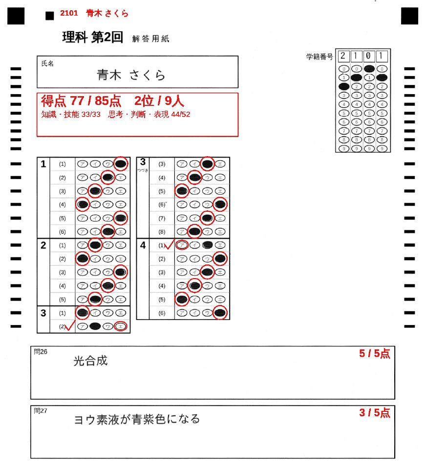

使う前に、大事なこと3つ
- 学校で使うときは、先に管理職・情報担当の先生に確かめてください（名簿や成績を扱うため）。
- 名簿・答案・点数は、使っているパソコンの中だけに保存します。インターネットには送りません。
- 読み取り・採点の結果や観点別の評価は、最後に先生が確かめて決めてください。
ほかの注意（共用のパソコンでの使い方など）は、このページの下にあります。
できること
- 用紙を作る: 大問・小問の表の形のマークシートを作って印刷します。横書き・国語の縦書き・一問一答・両面に対応。
- 読み取る: スキャンした答案をまとめて読み取ります。あやしい所は「要確認」で知らせます。
- 採点する: 正答・配点を入れると自動で採点。観点別の点数、全部合って正解の問題、答えの順番を問わない問題、記述問題の採点もできます。
- まとめる: 採点表（Excel で開けます）、生徒に返す採点済みの答案（右の写真）、点数の分布や、どの問題でつまずいたかが分かる表を作ります。

使い方の動画
場面ごとの短い動画です（字幕つき・音は BGM だけ）。番号はアプリの左の列の番号と同じです。
説明書（PDF）
- はじめの1枚 採点の日の流れ（A4 1枚）。印刷して手元に置けます。
- 解答用紙の作り方 いまの問題用紙に合わせた解答用紙の作り方（A4 1枚）。
- 困ったときのQ&A よくある困りごとと直し方（6MB。スマホでは開くのに時間がかかります）。
- 主任・情報担当用 名簿の設定と配り方 学年や学校の名簿をまとめて用意して、先生たちに配る人向け。
困ったとき
- アプリの左下「その他 ▾」→「困ったときは（Q&A）」で、言葉を入れて探せます。
- 印刷して読みたいときは 困ったときのQ&A（PDF）。
- それでも解決しないとき、不具合を見つけたとき、ご意見は 受付のフォーム から送ってください。生徒の名前や答案の画像は送らないでください。
インターネットが使えないパソコンでは（ZIP版）
アプリ・説明書・練習モードを1つにまとめたファイル（ZIP）を落として使えます。Windows 用です。
- 落としたZIPを右クリック →「すべて展開」で取り出します。（ZIPの中から直接開くと、うまく保存されません）
- 取り出したフォルダをドキュメントなど決まった場所に置き、「電子採点システム君.html」をダブルクリックします。
ネットが使えるパソコンでダウンロードして、USBメモリなどで移しても使えます。このページから開いたアプリとZIP版のアプリとでは、保存したデータは共有されません。移すときは「ファイルに保存」→「ファイルから読み込む」を使ってください。
使う前に（くわしく）
- 対象: 学校の先生（おもに中学校）。
- 名簿・答案・点数は、開いたパソコンのブラウザの中だけに保存します。読み取りもパソコンの中でします。
- 別のパソコンで続けるときや控えを取るときは、アプリの「ファイルに保存」を使ってください。
- 共用のパソコンでは、使い終わったら「その他 ▾」→「このパソコンからデータを全部消す」を押してください。
- このアプリは無保証です。使って起きた損害について、作成者は責任を負いません。
作成者・ライセンス
作成者・著作権者: 技術科 岡田（© 2026）
ライセンス: CC BY-NC-SA 4.0（表示・非営利・継承）
作成者を表示し、お金を取らずに使うなら、コピーして配ったり直して使ったりできます。直したものを配るときも同じライセンスにしてください。アプリに含まれる pdf.js は Apache License 2.0 です。